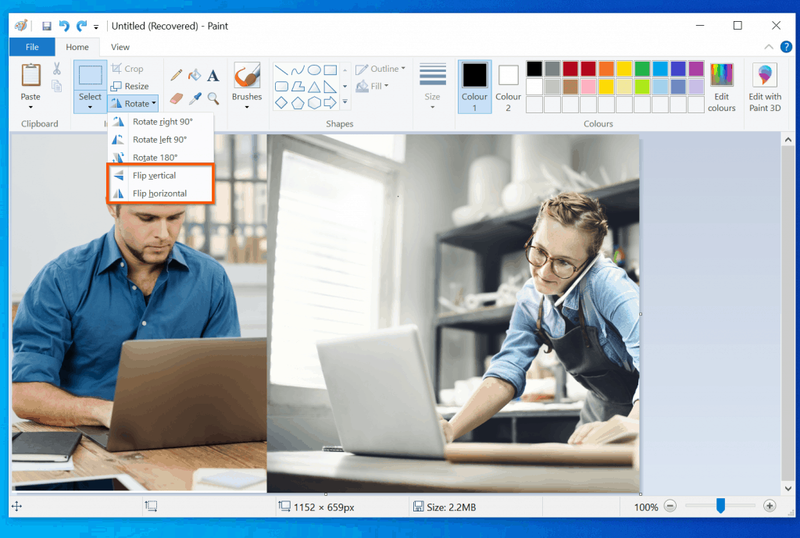
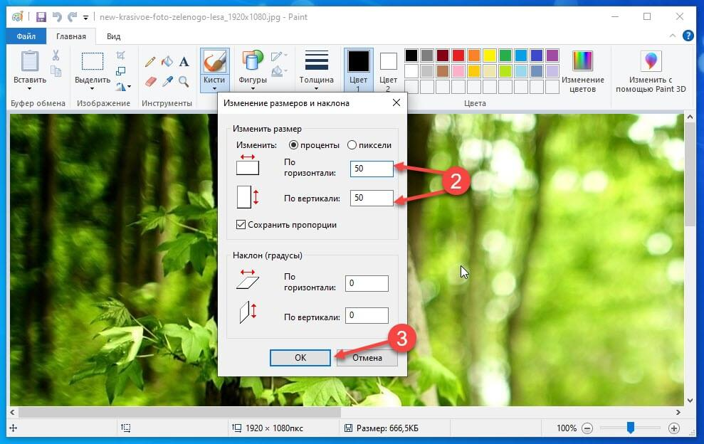

Учимся изменять положение и форму графических объектов
с помощью команд графического редактора Paint.
Графическое преобразование
01
Преобразование графических изображений
Изображение можно не только рисовать, но и изменять с помощью специальных команд.
В графическом редакторе Paint есть команды, которые позволяют
изменять положение изображения, создавать его зеркальную копию
или изменять наклон отдельных частей.
↔️
Отражение
Изображение меняет расположение элементов так,
словно его увидели в зеркале.
🔄
Поворот
Изображение вращается вокруг центра на определённый угол.
📐
Наклон
Части изображения смещаются относительно друг друга,
из-за чего меняется его форма.
🖌️
Область преобразования
Команды можно применять ко всему изображению
или только к предварительно выделенному фрагменту.
Перед выполнением преобразования важно определить,
что именно нужно изменить: всё изображение или только его часть.
02
Отражение изображения
Отражение создаёт зеркальное расположение элементов.
При отражении изображение как бы переворачивается относительно
воображаемой оси. В Paint предусмотрены два варианта этой команды.
Отражение по горизонтали
Левая и правая стороны меняются местами.
Исходное
→
Отражённое
Например, объект, находившийся слева, после отражения окажется справа.
Отражение по вертикали
Верхняя и нижняя части меняются местами.
Исходное
→
Отражённое
Например, верхняя часть объекта после отражения окажется внизу.
Запомни: горизонтальное отражение меняет
расположение слева направо, а вертикальное — сверху вниз.
03
Поворот изображения
Поворот изменяет направление изображения, не превращая его в зеркальную копию.
В Paint можно повернуть изображение на определённый угол.
Наиболее часто используются повороты на 90 и 180 градусов.
Поворот на 90°
Изображение поворачивается на четверть оборота.
Поворот на 90° по часовой стрелке или против неё меняет
направление изображения на четверть оборота.
Поворот на 180°
Изображение переворачивается вверх ногами.
Поворот на 180° — это половина полного оборота.
Объект оказывается перевёрнутым.
В меню поворота Paint обычно доступны команды: поворот
на 90° вправо, поворот на 90° влево и поворот на 180°.
04
Наклон изображения
Наклон меняет форму изображения за счёт смещения его частей.
При наклоне верхняя или нижняя часть изображения смещается
относительно другой. В результате прямоугольные элементы
могут становиться похожими на параллелограммы.
Наклон по горизонтали
Изменяется взаимное расположение частей слева и справа.
При горизонтальном наклоне части изображения смещаются
в сторону, и вертикальные границы могут стать наклонными.
Наклон по вертикали
Изменяется взаимное расположение верхних и нижних частей.
При вертикальном наклоне верхняя и нижняя части
смещаются относительно друг друга.
Важно: наклон не равен повороту.
При повороте изображение вращается целиком, а при наклоне
его части смещаются относительно друг друга.
05
Где находятся команды в Paint?
Для преобразования изображения используются инструменты группы «Изображение».
В классическом интерфейсе Paint команды находятся на вкладке
«Главная». Для поворота и отражения используется
меню «Повернуть», а для наклона —
окно «Изменение размеров и наклона».

Пример расположения команд поворота и отражения
в классической версии Paint.

Пример окна «Изменение размеров и наклона» с настройками
горизонтального и вертикального наклона.
Интерфейс Paint может немного отличаться в разных версиях Windows.
Названия и расположение отдельных элементов могут изменяться,
но назначение команд остаётся тем же.
06
Как выполнить преобразование?
Сначала выбери область изображения, затем используй нужную команду.
1
Открой изображение.
Запусти Paint и создай новый рисунок или открой готовый файл.
2
Выбери область.
Команду можно применить ко всему изображению
или к отдельному выделенному фрагменту.
3
Найди нужную команду.
Для отражения и поворота открой меню «Повернуть»,
для наклона — окно изменения размеров и наклона.
4
Выполни преобразование.
Выбери направление отражения или поворота
либо укажи значение наклона в градусах.
5
Проверь результат.
Сравни новое изображение с исходным.
При необходимости используй команду отмены действия.
6
Сохрани работу.
Выбери имя файла и сохрани полученное изображение
в подходящем графическом формате.
Если преобразуешь только часть изображения, внимательно
проверь выделенную область. При перемещении или повороте
фрагмента на его прежнем месте может остаться пустая область.
07
Практическая работа
«Преобразование графического изображения»
Цель практической работы — научиться применять команды наклона,
отражения и поворота, а также различать результаты их выполнения.
Общее задание
Выполни преобразования одного или нескольких графических объектов.
Сравни исходное изображение с результатами и объясни,
какие команды были применены.
💻
Работа в Paint
Для выполнения задания используй компьютер
с установленным графическим редактором Paint.
Создай или открой изображение с несколькими графическими объектами.
Выдели один объект или отдельный фрагмент.
Выполни отражение по горизонтали.
Выполни отражение по вертикали.
Поверни изображение или выделенный объект на 90° и 180°.
Примени наклон по горизонтали или вертикали.
Сравни результаты и сохрани итоговое изображение.
✏️
Работа с изображениями
Для выполнения задания используй предложенные схемы
и клетчатую сетку в тетради.
Определи, какие преобразования применены к предложенным изображениям.
Выполни отражение фигур по горизонтали и вертикали.
Изобрази результат поворота объекта на 90° и 180°.
Покажи на клетчатой сетке изменение формы фигуры при наклоне.
Сравни исходные и преобразованные изображения.
Подпиши, какая команда соответствует каждому результату.
В обоих вариантах необходимо не просто получить новое изображение,
но и правильно определить, какая команда была использована
и как она изменила объект.
08
Как оценить результат?
✓
Правильность
Все требуемые преобразования выполнены
в соответствии с заданием.
📐
Понимание команд
Ученик различает наклон, отражение и поворот
и может объяснить их действие.
🎨
Аккуратность
Графические объекты и выделенные области
обработаны без случайных изменений.
💾
Сохранение
Итоговая работа сохранена и доступна для просмотра.
09
Вопросы для повторения
Проверь, насколько хорошо ты разобрался в командах Paint.
Для чего предназначены команды наклона, отражения и поворота?
Чем горизонтальное отражение отличается от вертикального?
Как изменится изображение при повороте на 90°?
Что произойдёт с изображением при повороте на 180°?
Какие варианты поворота доступны в Paint?
Чем наклон изображения отличается от его поворота?
Где в Paint находятся команды отражения и поворота?
В каком окне можно задать значение наклона изображения?
Можно ли применить преобразование только к выделенному фрагменту?
Для чего используется команда отмены действия?
Что необходимо проверить после выполнения преобразования?
Зачем нужно сохранять исходную копию изображения перед редактированием?
Итог урока
Команды наклона, отражения и поворота позволяют преобразовывать
графические изображения средствами Paint. Отражение изменяет
расположение элементов зеркальным образом, поворот меняет
направление изображения, а наклон изменяет его форму за счёт
смещения частей. Эти команды можно применять как ко всему
изображению, так и к отдельным выделенным фрагментам.